Winnitron SH COMPLETE
2011-11-05 04:50:44
status: inherit
author: Bryan

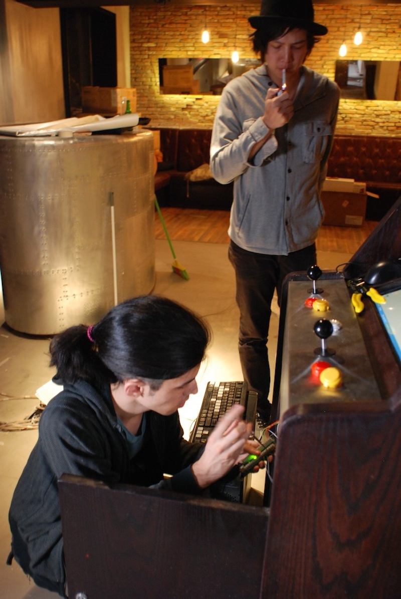
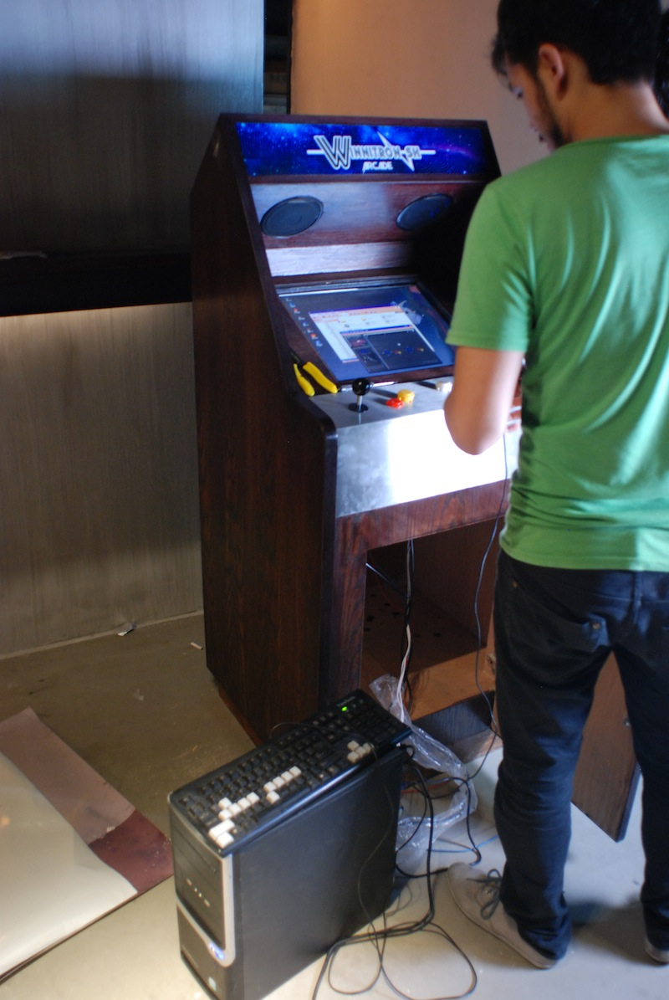
Final physical work was done about a week or two ago. The Brothers Ma and R3 in the space.
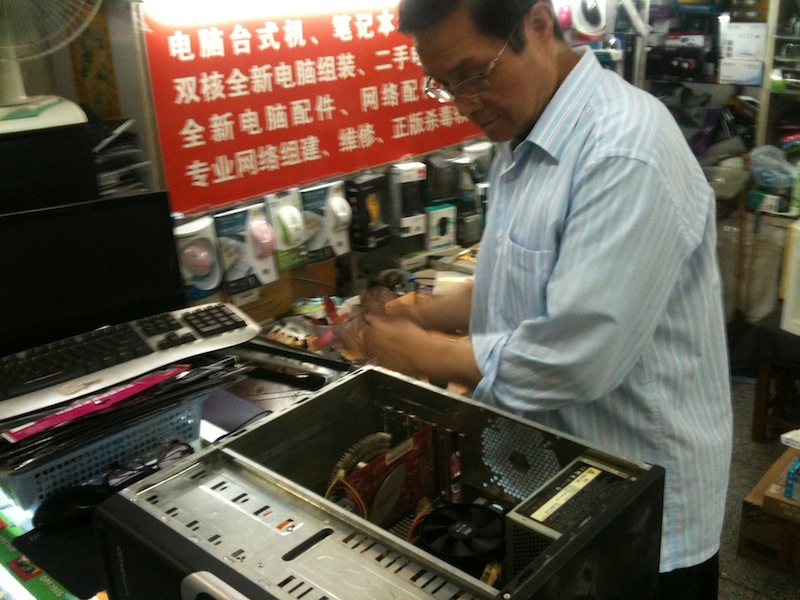
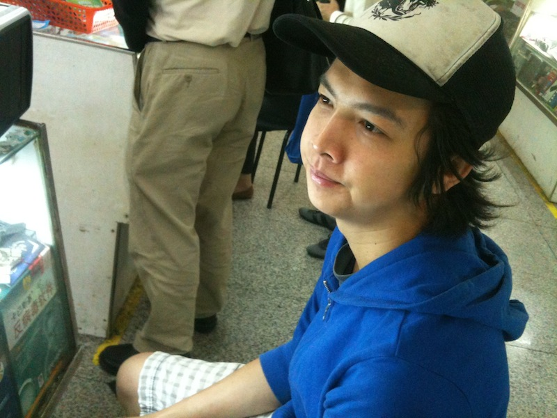
We had our fair share of hurdles to overcome - second-hand PC not turning on, motherboard needs replacing, electronics are loose, mouse not working, database not connecting, Winnitron login not working, Great Firewall of China interference...
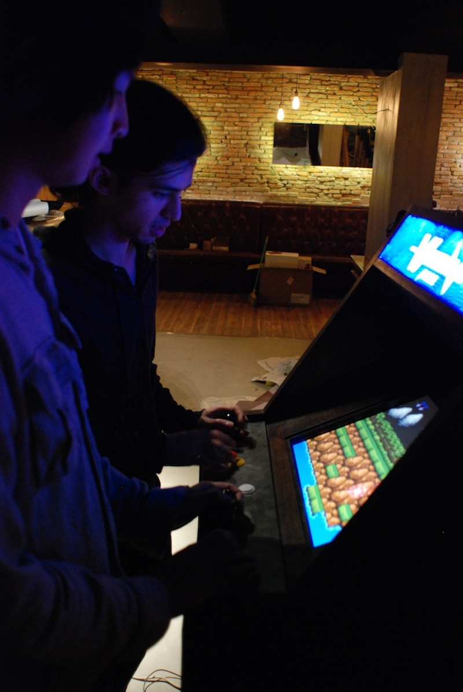
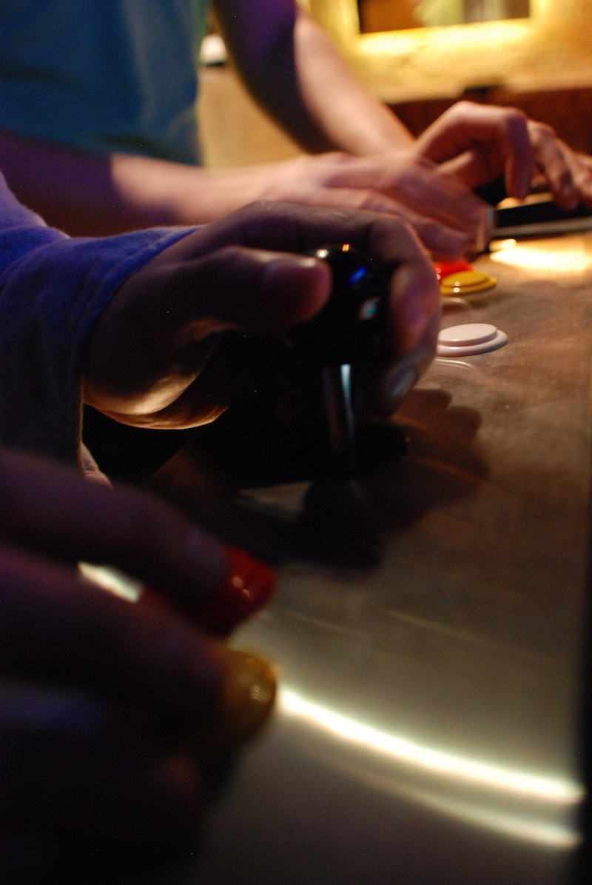
Once we got the electronics working, we threw on some temporary games to test the reliability of our installed controls.
Tonight, finally...
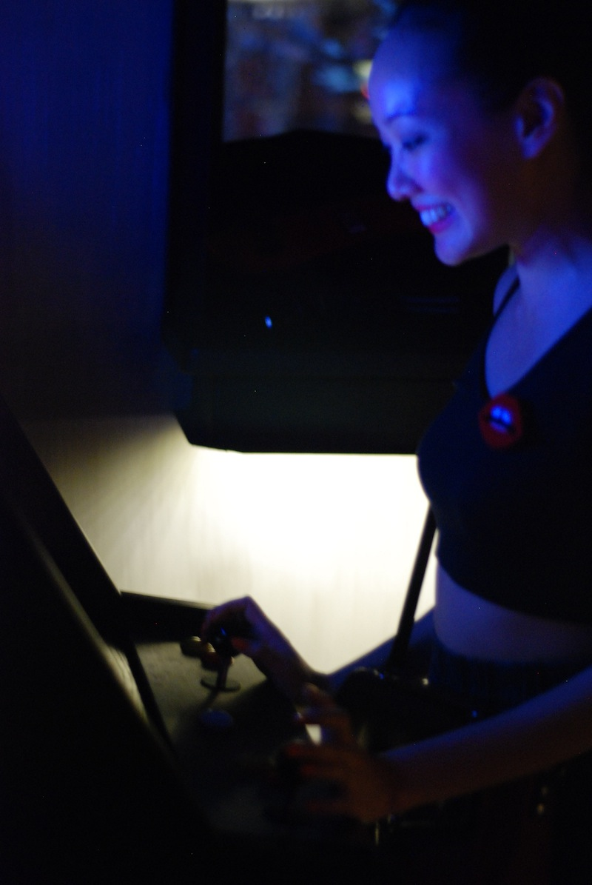 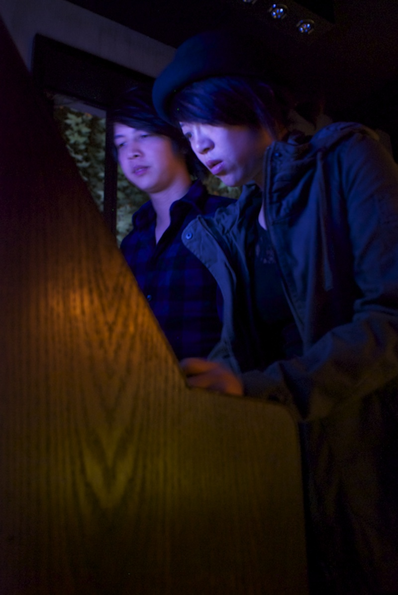
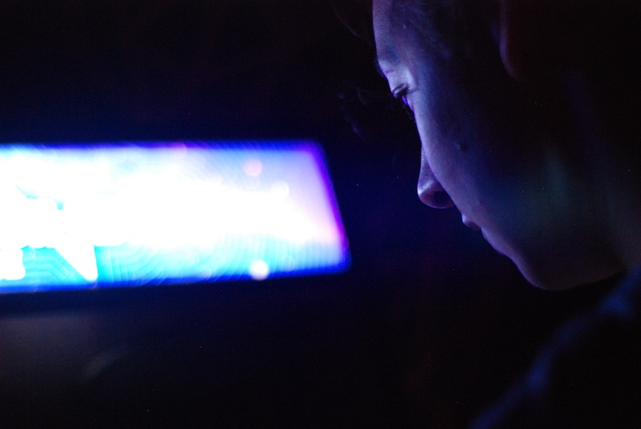
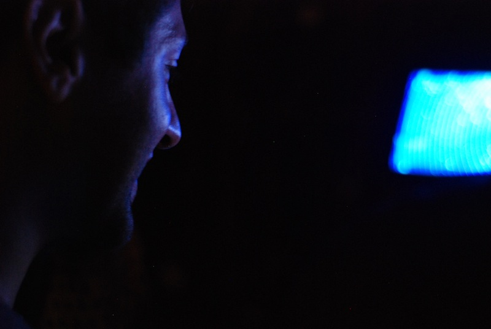
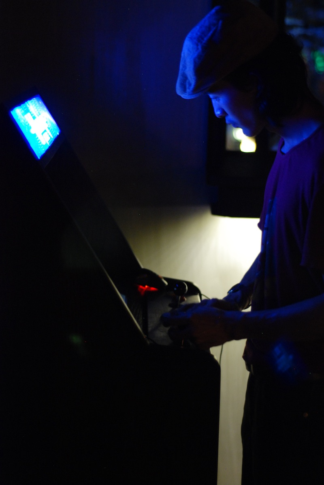 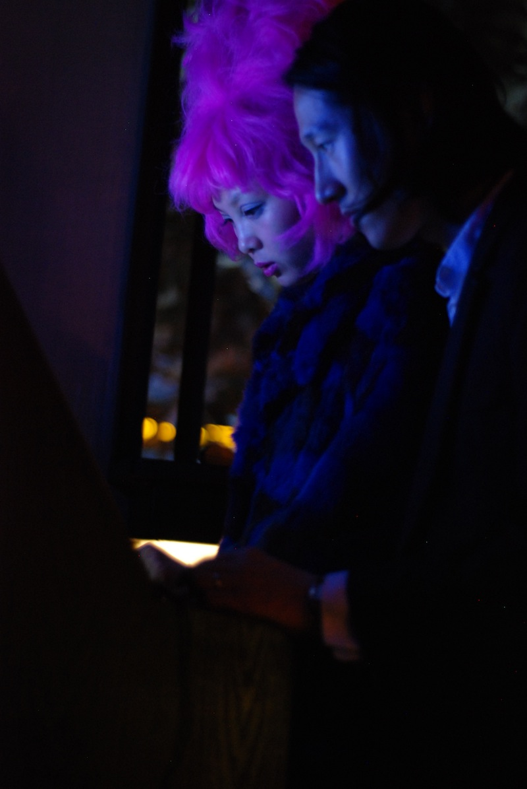 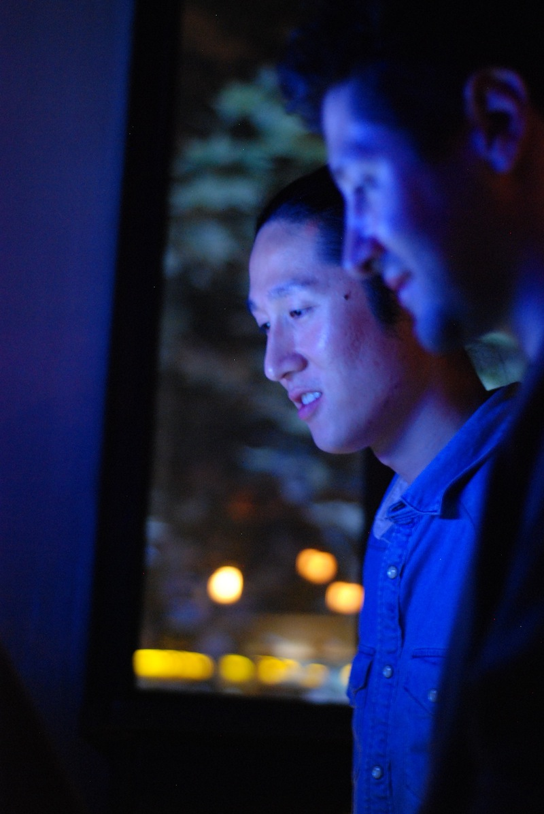
... We finished coordinating with the Bit Collective gang to get us fully online and good to go. The games are all synced to our local machine and we are in. The Winnitron games are now up and ready to play for the first time in Shanghai, China, and Asia.
Comments: